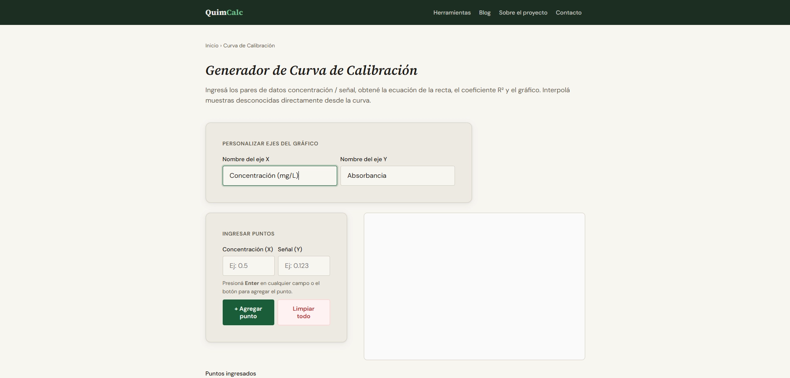
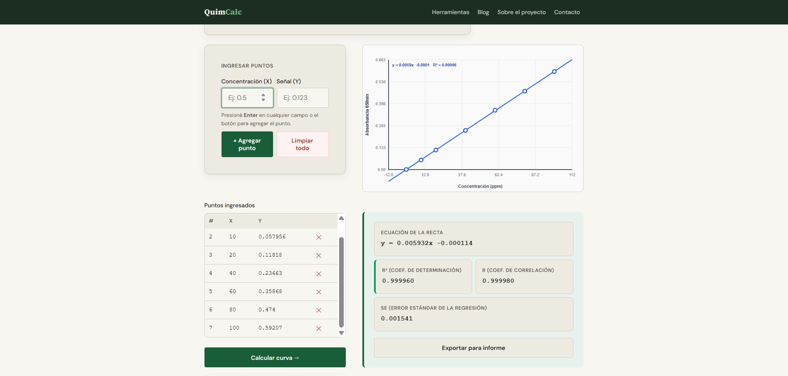
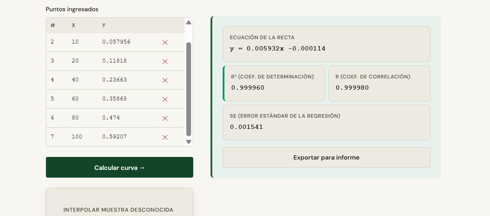
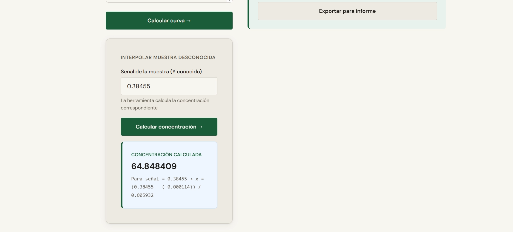
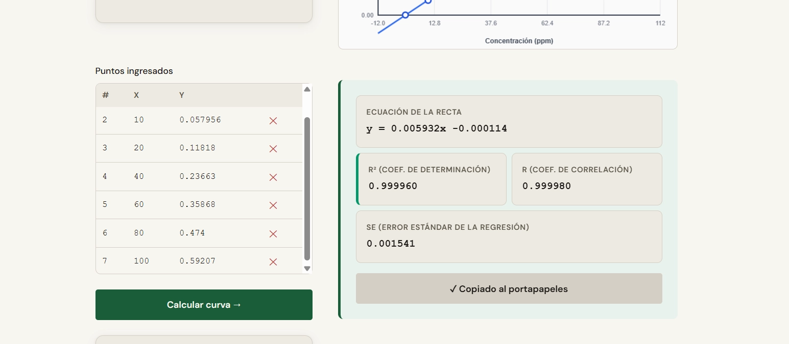
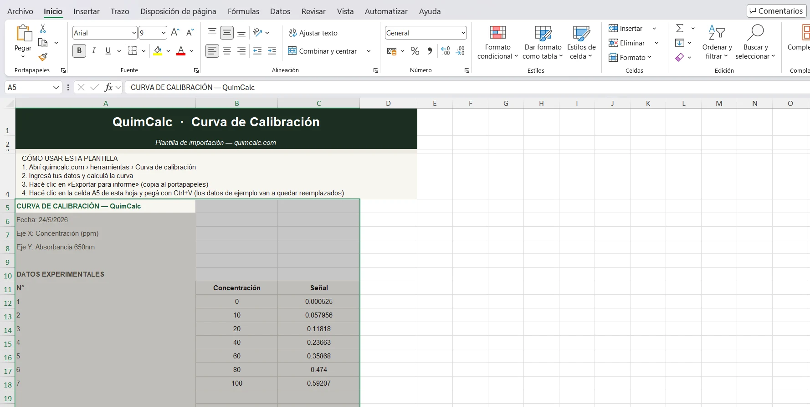
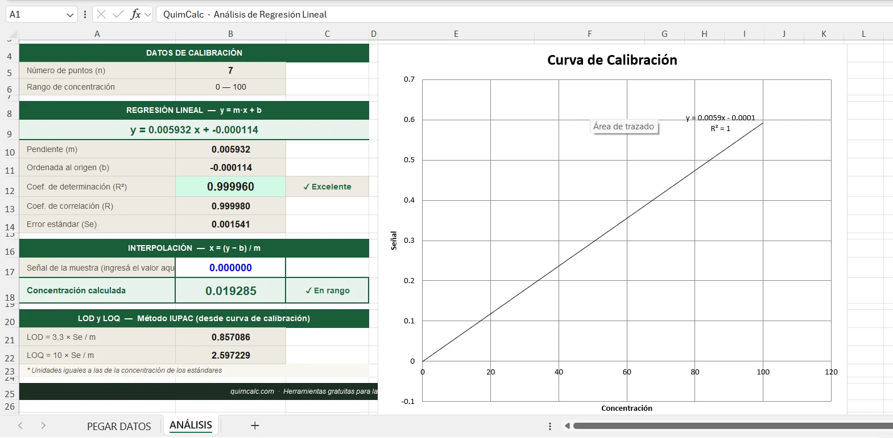

Instrumentación
Cómo construir una curva de calibración paso a paso
Guía práctica para construir, validar y usar una curva de calibración con la herramienta de QuimCalc. Al final podés exportar todos los resultados a un Excel listo para adjuntar al informe.
La curva de calibración es el corazón de cualquier método cuantitativo: espectrofotometría UV-Vis, cromatografía, fluorimetría. Construirla correctamente —con los estándares adecuados, un buen R² y la interpolación dentro del rango— es lo que valida tus resultados.
En esta guía vas a ver cada paso con la herramienta de curva de calibración de QuimCalc: desde ingresar los datos hasta exportar el informe al Excel descargable de esta misma página.
Plantilla Excel — Curva de Calibración QuimCalc
Pegá los datos exportados desde la herramienta con un Ctrl+V. Incluye regresión automática, interpolación, LOD y LOQ, y gráfico integrado.
Preparar los estándares de calibración
Antes de abrir la herramienta, preparás tus soluciones estándar con concentraciones conocidas. Necesitás al menos 5 puntos para una calibración válida —6 a 8 es lo ideal. Siempre incluí un blanco (concentración cero) como primer punto.
- Blanco: 0 mg/L
- Estándar 1: concentración baja (cerca del LOQ esperado)
- Estándares 2, 3, 4: concentraciones intermedias distribuidas de forma pareja
- Estándar 5 o más: concentración alta (límite superior del rango)
Usá material volumétrico calibrado y soluciones madre trazables. La calidad de la curva depende 100% de la calidad de los estándares.
Abrir la herramienta en QuimCalc
Abrí la calculadora de curva de calibración. Vas a ver dos campos de entrada (concentración y señal) y una tabla donde se van acumulando los puntos. Podés etiquetar los ejes con las unidades de tu método.

Ingresar los pares concentración / señal
Ingresá cada par (concentración, señal) y hacé clic en Agregar punto o presioná Enter. La herramienta calcula la curva automáticamente cuando tenés 3 o más puntos. Podés eliminar un punto si lo cargaste mal con el botón ✕ de la tabla.

Calcular y verificar la calidad del ajuste
Hacé clic en Calcular. La herramienta muestra la ecuación de la recta (y = mx + b), el coeficiente de determinación R² y el error estándar Se. El gráfico dibuja los puntos experimentales y la recta de regresión.

Los criterios de aceptación para el R² en métodos cuantitativos son:
- R² ≥ 0,999 — Excelente. Esperado en métodos acreditados ISO 17025
- R² ≥ 0,995 — Aceptable para métodos de rutina
- R² < 0,99 — Revisar estándares, instrumento o procedimiento
Primero mirá el gráfico: ¿hay un punto que se aleja visualmente de la recta? Si fue un error de preparación (lo sabés porque el dato quedó muy afuera), podés eliminarlo y recalcular. Si todos los puntos parecen correctos, el método puede tener comportamiento no lineal en ese rango —probá con un rango más angosto.
Interpolar la concentración de tus muestras
Una vez calculada la curva, usá la sección de interpolación: ingresá la señal medida de la muestra desconocida y la herramienta devuelve la concentración interpolada usando la fórmula:

Exportar los resultados
Hacé clic en Exportar para informe. El texto con todos los datos y resultados de la regresión se copia automáticamente al portapapeles, listo para pegarlo en el Excel o en tu informe de laboratorio.

El texto exportado tiene esta estructura (separado por tabulaciones):
Fecha: [fecha]
Eje X: [etiqueta]
Eje Y: [etiqueta]
DATOS EXPERIMENTALES
N° Concentración Señal
1 0 0,001
2 1 0,083
...
RESULTADOS DE REGRESIÓN LINEAL
Ecuación: y = ...x + ...
Pendiente (m): ...
R²: ...
Se: ...
Pegar en la plantilla Excel de QuimCalc
Abrí el Excel que descargaste arriba. En la hoja PEGAR DATOS, leé las instrucciones de las primeras filas, hacé clic en la celda A5 y pegá con Ctrl+V.

Pasá a la hoja ANÁLISIS. Vas a ver todos los resultados actualizados automáticamente: ecuación de la recta, R², pendiente, ordenada al origen, Se, LOD, LOQ y el gráfico de dispersión con línea de tendencia.

Captura: hoja "ANÁLISIS" con todos los resultados calculados y el gráfico de la curva con la recta de regresión
Para interpolar en el Excel, ingresá la señal de tu muestra en la celda azul de la sección INTERPOLACIÓN — la concentración se calcula automáticamente e indica si el valor está dentro del rango o si es una extrapolación.
Plantilla Excel — Curva de Calibración QuimCalc
Compatible con Excel 2016 o superior y LibreOffice Calc.
Preguntas frecuentes
¿Cuántos puntos necesito para una curva válida?
El mínimo estadísticamente aceptable son 5 puntos. Con menos, el R² puede ser alto por coincidencia, no porque el modelo realmente ajuste bien. Lo recomendado en métodos acreditados es 6 a 8 puntos bien distribuidos en el rango de trabajo.
¿Puedo interpolar si el resultado está fuera del rango?
No. Si la señal de la muestra corresponde a una concentración fuera del rango calibrado, el resultado es una extrapolación y no es válido analíticamente. La muestra tiene que diluirse (si está por encima) o reanalizar con mayor sensibilidad (si está por debajo del LOQ).
¿Cada cuánto hay que construir una nueva curva?
Depende del método y del instrumento. En espectrofotometría UV-Vis suele construirse una curva por sesión de análisis. En cromatografía puede calibrarse diariamente o cada cierta cantidad de inyecciones, según lo que indique el procedimiento validado.
¿El Excel sirve sin la herramienta de QuimCalc?
Sí. Podés escribir los datos directamente en las columnas B y C de la hoja PEGAR DATOS (desde la fila 12 en adelante) y la hoja ANÁLISIS va a calcular todo igual. La integración con el exportador de QuimCalc simplemente agiliza el proceso.
¿El LOD y LOQ que calcula el Excel son los mismos que la calculadora de LOD/LOQ?
Sí, ambos usan el método IUPAC: LOD = 3,3 × Se / m y LOQ = 10 × Se / m, donde Se es el error estándar de la regresión y m es la pendiente. Si querés usar otros métodos (señal/ruido o desviación estándar del blanco), usá la calculadora de LOD y LOQ independiente.